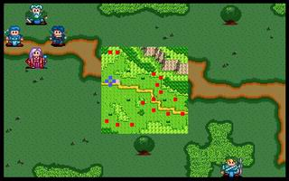

第二章 初战

 雷特
雷特 米兰
米兰 克隆
克隆 艾利欧
艾利欧
本关敌人：
 LV3 特遗队长 （HP180,AP114,DP26,HIT86,EV6,MV7）
LV3 特遗队长 （HP180,AP114,DP26,HIT86,EV6,MV7）
 LV2 骑兵x2 （HP100,AP56,DP10,HIT94,EV4,MV7）
LV2 骑兵x2 （HP100,AP56,DP10,HIT94,EV4,MV7）
 LV1 士兵x10 （HP100,AP42,DP12,HIT101,EV1,MV4）
LV1 士兵x10 （HP100,AP42,DP12,HIT101,EV1,MV4）
 LV1 弓箭手x2 （HP100,AP62,DP10,HIT83,EV3,MV4）
LV1 弓箭手x2 （HP100,AP62,DP10,HIT83,EV3,MV4）
胜利条件：敌人全灭
失败条件：雷特死亡
战后加入：
 LV2 骑士 巴拉多 （HP300,AP77,DP34,HIT96,EV6,MV7,刺矛,环状甲）
LV2 骑士 巴拉多 （HP300,AP77,DP34,HIT96,EV6,MV7,刺矛,环状甲）
战后报酬：
$750G/$2250G
攻略简要：
本章要特别注意弓箭手和骑兵的长距攻击，最好一开始往左上方移动，杀掉上面的两个士兵，再躲入树林里，如此除了特遗队长外，其余敌人基本上已无法令己方受伤太大。等特遗队长来时，再利用火流星将之消灭。
战后商店道具:
武器： |
防具： |
道具： |
剧情对话：
艾利欧:离开村庄也有一段路途了....师父,我们究竟要往哪里去呢？
克隆:在东方的潘达拉山上，住了一位相当有名的贤者，大家都称他为『圣者』。据说他不仅知识相当渊博，而且又和先王有过一段不浅的交情。所以我想先请殿下去拜访他，或许能得到一些协助。
米兰:前面出现了一队士兵!
特遣队长:喂!前面的人站住!你们是干什么的?
雷特:克隆伯父，我既然已经知道自己的身世，就不能再隐藏自己的身世，否则会辱没家父的名声....
克隆:既然殿下决意如此的话，属下等愿意誓死相随到底!
雷特:好....前面的士兵听着!我乃罗特帝亚二王子雷特!为了报先王之仇，即将前往讨伐叛将哈奇!
特遣队长:原来你们是叛党!竟然还敢大言不惭，真是不知死活!来人呀!将他们拿下!
打死了几个骑兵和特遣队长后战斗结束
巴拉多:你们是何方人物?竟然和王国的军队作对!
雷特:我乃罗特帝亚二王子雷特。你是....
巴拉多:原来是雷特王子!我是巴拉多，原本是罗特帝亚骑士团的先锋。
雷特:原本是?
巴拉多:嗯!大概是我的个性太直了，得罪了哈奇的亲信。在不得已之下，只好先到这个地方避一避。没有想到，竟然会在这种情形下遇到殿下!
艾利欧:这么来说，你和刚才那些家伙不是一伙的了?
巴拉多:我巴拉多虽然是个武人，但是至少还能分得清这些是非。当初加入骑士团，是因为仰慕骑士团的忠义精神。如今知道哈奇是个篡国贼，岂能和他再同流合污呢?
雷特:既然如此，你往后有何打算?
巴拉多:请让我加入你们的行列吧!别的我不敢说，但是这种冲锋打仗的事，我可是不会输给任何人的!
雷特:这....
巴拉多:殿下!难道你瞧不起我吗?
雷特:那儿的话!欢迎你成为我们的伙伴!
巴拉多:太好了!多谢殿下!
第二章完